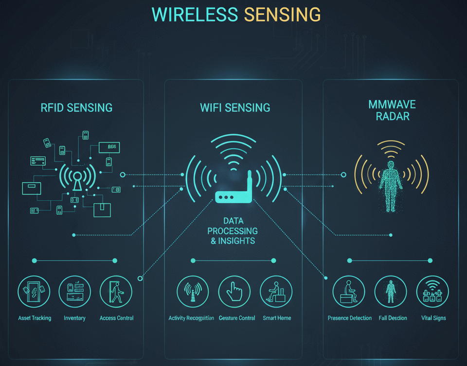

~ Cagri Tanriover's Publications & Patents in Wireless Sensing ~
Peer Reviewed Publications
Anoh, K.,
Tanriover, C.
, Ribeiro, M. V., Adebisi, B., & See, C. H. (2022).
"On the Fast DHT Precoding of OFDM Signals over Frequency-Selective Fading Channels for Wireless Applications."
Electronics, 11(19), 3099. https://doi.org/10.3390/electronics11193099.
C. -Y. Wan,
C. Tanriover
and R. C. Shah,
"Utilizing RFID Tag Motion Detection in High Tag Density Environments for Customer Browsing Insights,"
in IEEE Journal of Radio Frequency Identification, vol. 5, no. 4, pp. 345-356, Dec. 2021, doi: 10.1109/JRFID.2021.3087229.
Niu, X., Li, S., Zhang, Y., Liu, Z., Wu, D., Shah, R. C.,
Tanriover, C.
, Lu, H., & Zhang, D. (2021).
"WiMonitor: Continuous Long-Term Human Vitality Monitoring Using Commodity Wi-Fi Devices."
Sensors, 21(3), 751. https://doi.org/10.3390/s21030751
C. -Y. Wan,
C. Tanriover
and R. C. Shah,
"RFID Tag Motion Detection in High Tag Density Environments for Customer Browsing Insights,"
2020 IEEE International Conference on RFID (RFID), Orlando, FL, USA, 2020, pp. 1-8, doi: 10.1109/RFID49298.2020.9244868.
K. Anoh, B. Adebisi, K. M. Rabie and
C. Tanriover
,
"Root-Based Nonlinear Companding Technique for Reducing PAPR of Precoded OFDM Signals,"
in IEEE Access, vol. 6, pp. 4618-4629, 2018, doi: 10.1109/ACCESS.2017.2779448.
K. Anoh,
C. Tanriover
and B. Adebisi,
"On the Optimization of Iterative Clipping and Filtering for PAPR Reduction in OFDM Systems,"
in IEEE Access, vol. 5, pp. 12004-12013, 2017, doi: 10.1109/ACCESS.2017.2711533.
K. Anoh,
C. Tanriover
, B. Adebisi and M. Hammoudeh
"A New Approach to Iterative Clipping and Filtering PAPR Reduction Scheme for OFDM Systems,"
in IEEE Access, vol. 6, pp. 17533-17544, 2018, doi: 10.1109/ACCESS.2017.2751620.
Patents
Tanriover, C.,
Pinaroc, M., Lu, H., Shah, R., Ilani, T., Gurevitz, A., Apsel, U., Perlmutter, U.,
“Wireless-enabled micromotion detection,”
U.S. Patent No. US 20250306194A1. Patent and Trademark Office.
Tanriover, C.,
Shah, R. C., & Wan, C.-Y., 2025,
“Probabilistic contextual inference using RFID tag-interactions,”
U.S. Patent No. US 12,260,284 B2. U.S. Patent and Trademark Office.
Chieh-Yih Wan, Eduardo Alban, Satoshi Suzuki, Robert Flory, Alex Nguyen, Rahul C. Shah,
Cagri Tanriover,
2022,
“Range extension and dynamic power control for localization on commercial uhf rfid reader,”
(U.S. Patent No. US20220108092A1). U.S. Patent and Trademark Office.
Wan, C. Y., Shah, R. C.,
Tanriover, C. C.,
& Chen, K. Y. (2020)
“Behavior detection using RFID in environments with high RFID tag density,”
U.S. Patent No. 10,832,024. Washington, DC: U.S. Patent and Trademark Office.